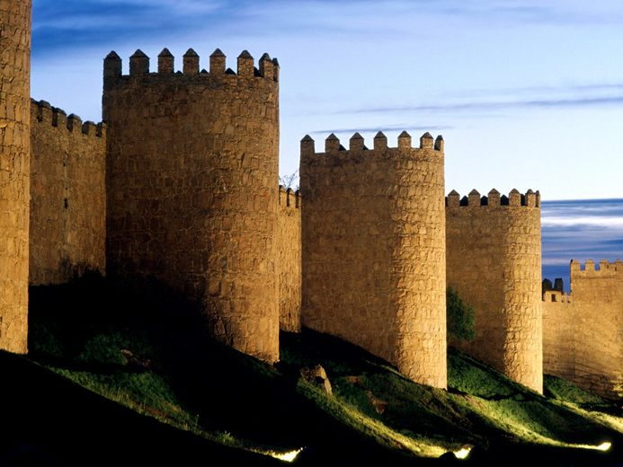

Х. Монтанер Монтехано «Классы туристической деятельности» (на материалах Испании)
- 
-

В конце первого десятилетия XXI в.
Испанию
посещало в год более 60 млн туристов,
из них 400 – 500 тысяч россиян.
Х. Монтанер Монтехано
«Классы туристической деятельности»
(раздел «Туристическая деятельность» из учебного пособия
«Структура туристического рынка». Смоленск, 1997)
Россия с конца 80-х гг. XX в. активно входит в
мировое туристское пространство, состоящее из разнообразных по степени развития
туризма стран. Но существует группа государств, которые являют собой образцы
туристского бизнеса и в вопросах создания туристской инфраструктуры, и
менеджмента туризма, и степени обученности всех звеньев туристского персонала,
и др. К таким странам с полным основанием можно отнести Испанию, постоянно
входящую в тройку мировых лидеров по числу посещающих ее иностранных туристов.
Изучение
опыта организации туризма в странах-лидерах представляет собой насущную
необходимость для каждого исследователя туризма в нашей стране. В настоящем
учебном пособии приводится классификация известного в Европе специалиста в
области туризма испанца Х. Монтанер Монтехано «Классы туристической деятельности»,
разработанная им на основе изучения характера туризма в Испании и ряде других
европейских стран.
Предлагается
студентам провести сравнительный анализ в качестве внеаудиторной учебной
исследовательской работы на тему: «Особенности развития туризма в европейских
странах и России, выявленные на основе изучения туристских классификаций».
Примерный
план анализа
1. Чем, по вашему
мнению, «класс» (по Х. Монтанер Монтехано) отличается от «вида» туризма (по
Долженко) ?
2. Целесообразно ли
виды туризма в классификации российского туризма сгруппировать еще и в классы?
3. Как отражена в
европейской классификации степень развитости туристской инфраструктуры?
4. Имеет ли смысл выделять
в два различных класса культурно-познавательный и городской туризм, как это
сделано в европейской классификации?
5. Как при сравнении
двух туристских классификаций можно
оценить степень
диверсификации туризма в России? Можно ли определить, где туризм более
диверсифицирован в Европе или России ?
6. Целесообразно ли было
выделять в европейской классификации «Класс 6. Речной туризм», когда раньше уже
был выделен «4.1. Водный туризм»?
Х.
Монтанер Монтехано всю туристскую деятельность, направленную на формирование
предложений туристам различных возможностей для использования их в свободное
время, подразделяет на десять классов.
Класс 1. Культурно-познавательный туризм
Культурно-познавательная
деятельность группируется следующим образом
1.1. Знакомство
с различными историческими, архитектурными или культурными эпохами с помощью
экскурсий по архитектурным памятникам, музеям, участие в исторических маршрутах
и т.п.
1.2. Посещение
культурных или артистических предложений: музыкальных, кино- и театральных
фестивалей, концертов, оперных сезонов, религиозных праздников, выставок
картин, скульптур, фотографий, боя быков и т.п.
1.3. Посещение
лекций, семинаров, симпозиумов, курсов иностранных языков.
1.4. Участие
в демонстрации фольклора, национальной кухни, прикладного искусства на
фестивалях фольклорных ансамблей, выставках национального народного творчества.
Класс 2. Сельский, или зеленый туризм
Туризм сельский (деревенский),
или зеленый является туристской деятельностью, которая проходит в контакте с
природой, жизнью в лагере или маленьких поселках. Эта деятельность сопряжена с
сельскохозяйственными работами, знакомством с жизнью небольших поселков, пешими
экскурсиями по природным объектам, изучением флоры и фауны, занятиями водными
видами спорта на реке, озере, путешествиями по горам, с организацией курсов
национальной кухни и другое. Проживание при таком туризме осуществляется в
загородных домах, которые приспособлены для этих целей, т.е. имеются кухня,
столовая и другие услуги или предлагаются дома, в которых проживают сами
крестьяне.
Класс 3. Городской туризм
Городской
туризм развивается в крупных, особенно столичных городах, таких как Нью-Йорк,
Париж, Лондон, Вена, Мадрид, Барселона, Рим и других. Продолжительность туров
этого вида туризма составляет от нескольких дней до недели. Во время городского
туризма уделяется внимание следующим видам туристской деятельности:
3.1. Экскурсии
по городу, знакомство с историко-архитектурными его особенностями, посещение
музеев, постоянных выставок.
3.2. Посещение
временных выставок в области культуры и искусства.
3.3. Посещение
кулинарных выставок и ресторанов с национальной кухней.
3.4. Посещение
культурных мероприятий в области кино, театра, оперного искусства, музыки,
танца и т.п.
3.5. Организация
покупок (шопингов) в специализированных магазинах и универмагах.
Класс 4. Спортивный туризм
Спортивный
туризм представляет собой традиционную форму туристской деятельности. В
последнее время его значительно оживили новые формы, особенно приключенческий
спорт. В этот вид туризма входит следующая спортивная деятельность.
4.1. Водный
туризм. Он является активной формой деятельности, известной с давних времен в
странах, имеющих водные ресурсы. В последние годы он переживает подъем,
связанный с возникновением новых современных спортивных форм. Имеется в виду
использование различных типов судов под парусом или с мотором, которые
приобретаются туристами или берутся на прокат.
Основной инфраструктурой этого вида
туризма является спортивный порт – общественный или частный. Он состоит из
следующих зон:
А. Морская
зона.
Б. Зона
технического обеспечения: судовые верфи, заправка топливом и т.д.
В. Зона
дополнительного обслуживания: рестораны, магазины, дискотеки и т.п.
4.2. Зимний
спорт. Практика зимнего спорта – это традиционный вид туристской деятельности.
Она имеет разновидности: равнинные лыжи, горные лыжи, катание на санях и др.
Основной инфраструктурой зимнего туризма является горная зимняя станция,
включающая в себя следующее:
А. Места для проживания и питания
– гостиницы, рестораны,
Б. Катки,
В. Средства обслуживания
туристов: пункты проката, медицинские пункты, администрацию и т.п.,
Г. Учреждения дополнительного
обслуживания: дискотеки, магазины и др.
4.3. Охота
и рыболовство. Деятельность, связанная с охотой и рыболовством, относится к
традиционным формам туризма. Она осуществляется согласно определенным правилам,
выдаваемым лицензиям и разрешениям. Одним из вариантов большой охоты является
сафари в заповедниках Африки. Основные условия проведения рыбалки схожи с
охотой.
4.4. Гольф.
Гольф является одной из разновидностей специального вида туризма.
Инфраструктура центров гольфа состоит из следующих зон:
А. Зона поля с соответствующими
лунками,
Б. Зона обслуживания игроков в
гольф: раздевалки, технические службы, администрация, магазин,
В. Дополнительная зона:
рестораны, бары, детские сады, зал для собраний, парковка автомашин.
Класс 5. Приключенческий туризм
Приключенческий туризм
можно условно разделить на две части: приключенческий спорт и приключенческие путешествия.
5.1.
Приключенческий спорт. В настоящее время возникли новые виды спорта, связанные
с приключениями, которые включаются в туристскую деятельность. Среди них можно
выделить:
А. Аэростатный туризм –
путешествие на воздушном шаре,
Б. «Bus-bob» – спуск по реке на специальной лодке особой формы, в которой
находятся все участники,
В. «Сars» –
спуск на «car» по горным склонам зимой по снегу, летом по
траве,
Г. Скалолазание,
Д. «Kayak» –
спуск на индивидуальных каноэ по бурным рекам,
Е. Прыжки с парашютом,
Ж. Дельтаплан – спуск с гор на
дельтаплане или специальном парашюте,
З. Водные лыжи,
И. Виндсерфинг – катание под
парусом на доске в море или озере,
К. «Trekking»
– путешествия пешком, они длятся от одного дня до нескольких недель, при этом
проводятся различные соревнования, знакомство с природой и т.п.
5.2.
Приключенческие путешествия. Приключенческий туризм заключается в различных
видах путешествий, маршруты которых проходят по территориям со сложными
природными условиями. Кроме того, возможные трудности маршрута могут зависеть
от транспортных средств, мест проживания, вида питания.
Туристскими зонами, в которых
практикуются авантюрные путешествия, являются африканские саваны и пустыни,
горные районы Азии и Южной Америки, река Амазонка и т.п.
Существуют специальные туристские
агентства, обслуживающие в основном молодежь, которая предпочитает рискованный
спорт и приключения другим видам отдыха.
Класс 6. Речной туризм
Речной туризм получил свое
развитие первоначально на реках и каналах Франции и Голландии и затем
распространился в другие страны, располагающими соответствующими водными
ресурсами.
Такая туристская деятельность
заключается в путешествии от одной до нескольких недель на небольшом судне,
вмещающем от 8 до 12 человек, на которых туристы проживают, питаются и
отдыхают. Суда обычно берутся на прокат в специальных агентствах. Туристы во
время путешествия выполняют все правила судовождения. Путешествие проходит в
сочетании с экскурсиями, посещением музеев, театров, отдыхом на речных пляжах.
Класс 7. Морские круизы
Морские путешествия возникли в XIX в. после революции на морском транспорте и появления пароходов. Ранее
такие путешествия занимали несколько часов и проходили в прибрежной зоне, в
настоящее время они могут длиться до нескольких месяцев и быть кругосветными.
Круизы имеют замкнутые циклы,
т.е. суда выходят из какого-либо порта и туда же возвращаться. Одновременно
практикуется сочетание судно-самолет и другие комбинации.
Класс 8. Бальнеологический туризм
Туризм, связанный с термальными и
лечебными водами, известен с древнейших времен. В настоящее время он активно
развивается. Сущность его в употреблении минеральной воды и
медико-оздоровительных процедурах.
Организация инфраструктуры
заключается в наличии трех зон:
8.1. Зона
отдыха и питания, расположенная в основном в гостиницах.
8.2. Зона
медико-санитарных процедур и минеральных вод, используемых для лечения.
8.3. Зона
спортивных, оздоровительных и культурных занятий: библиотеки, игровые залы,
спортивные сооружения и т.п.
Класс 9. Деловой и научный туризм
Деловой и научный туризм
непосредственно связаны с городским туризмом и развивается, как правило, в
больших городах.
9.1.
Деловой туризм. Несмотря на то, что в узком значении слова торговля и деловая
активность не являются собственно туристской деятельностью, они тесно связаны и
развиваются параллельно в ряде областей, таких как:
А. Деятельность в области
недвижимости.
Б. Деятельность на транспорте.
В. Деятельность в сфере
ресторанов.
Г. Деятельность по туристским
визитам.
Д. Деятельность по закупке
товаров (shopping).
Е. Культурная, спортивная деятельность,
проведение отдыха.
Ж. Деятельность по организации
ярмарок, симпозиумов, приемов, презентаций и т.п.
Подобная деятельность является
довольно рентабельной, благодаря значительному числу коммерческих связей,
которые осуществляются в деловых кругах, и количеству услуг, предоставляемых на
высшем уровне клиентам.
9.2.
Научный туризм. Научный туризм, связанный с организацией и проведением
конгрессов, симпозиумов, семинаров, напоминает деловой туризм и обычно проходит
в крупных городах, известных своими научными и культурными традициями.
Организационная деятельность по
проведению мероприятий научного туризма имеет следующие аспекты:
А. Экономический
аспект: бюджет для их проведения (стоимость, финансирование, расходы по приему
гостей).
Б. Инфраструктура:
здания для проведения конгрессов, их обслуживание, пресс-центры.
В. Психологические
аспекты: маркетинг самих встреч, информация, общественные сношения, оздоровительное
и культурно-туристское обслуживание участников.
Г. Аспекты
обслуживания: гостиницы, транспорт, ресторан, переводчики, гиды, визиты,
встречи.
Класс 10.
Туризм поощрительный и познавательный
Поощрительный туризм состоит в
организации путешествий для сотрудников туристских фирм для отдыха с целью
поощрения их профессионального усердия и усиления мотиваций в работе. Он также
распространяется на продавцов турпутевок и отдельных постоянных клиентов для
стимулирования продажи туристских путевок.
Познавательный туризм для
профессиональных продавцов туров имеет целью их ознакомления с продуктом или
услугами, которые они предлагают на продажу. Участники туров исследуют все
аспекты предлагаемой продукции для повышения уровня продажи. Этот вид туризма
распространен в турагентствах, гостиницах, транспортных организациях и ведет к
улучшению уровня обслуживания клиентов.
Знакомство с
классификацией Х. Монтанер Монтехано, позволяет увидеть, что туристский
комплекс в европейских странах представляет собой сложную, хорошо развитую сферу
хозяйства, в которой особое внимание уделяется созданию инфраструктуры каждого
вида и класса туризма.